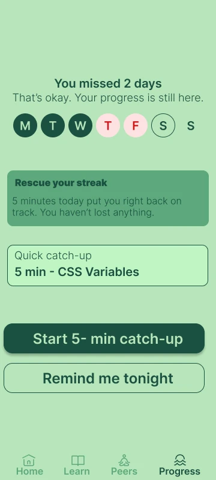

Recovery mode instead of a broken streak
Miss two days and the app says "That's okay. Your progress is still here," then offers a 5-minute catch-up or "remind me tonight."
Why: the research said people quit at the guilt step, not the motivation step. Removing the punishment removes the reason to avoid opening the app.
